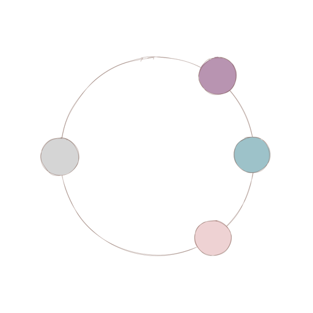
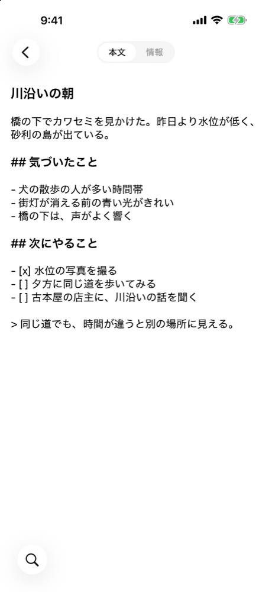
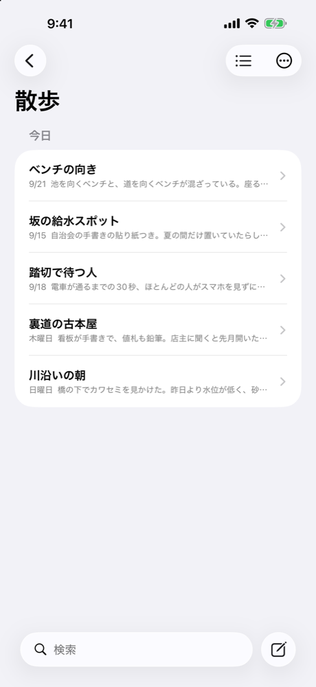
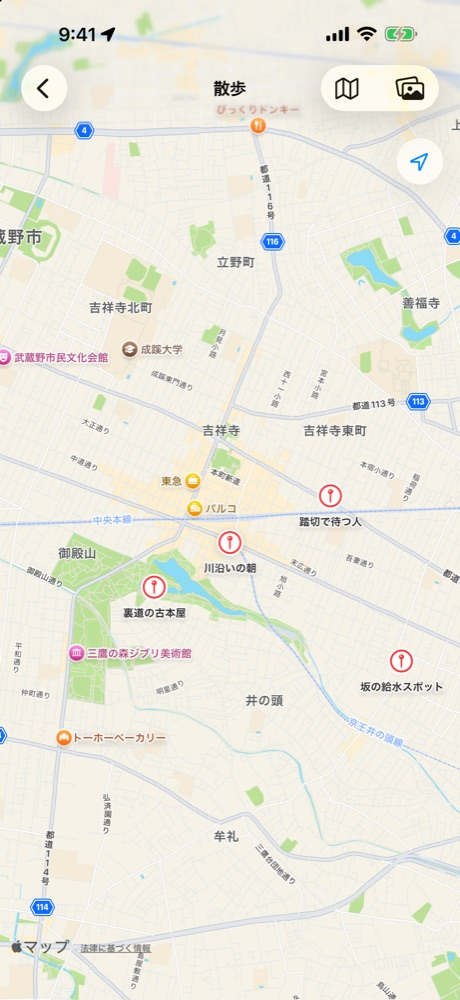

日常の気づきを、その場ですばやく記録するiPhoneアプリ
App Storeで公開予定です



フィールドワーカーのように、人間ならではの気づきを、写真・メモ・位置情報として記録します。
アプリを開いてすぐに、メモを書き始められます。メモには、書いた場所の位置情報を記録できます。
メモは、あなたが選んだフォルダ（iCloud Driveなど）に、Markdownのファイルとして保存されます。ほかのアプリでも、そのまま開けます。開発者のサーバーへは送信しません。
メモに記録した場所と、写真ライブラリの写真の撮影場所が、Appleの標準の地図にピンとして表示されます。過去の気づきを、場所から見つけられます。